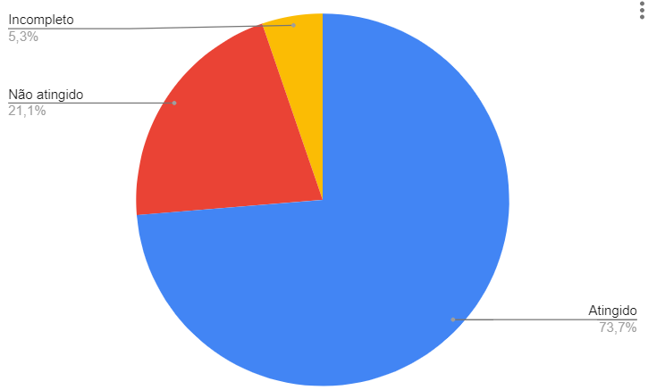
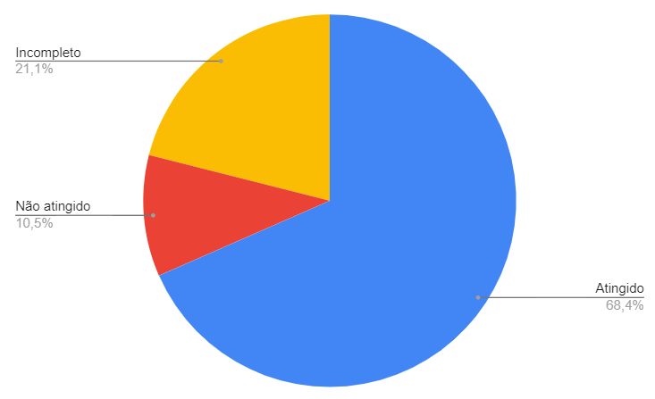
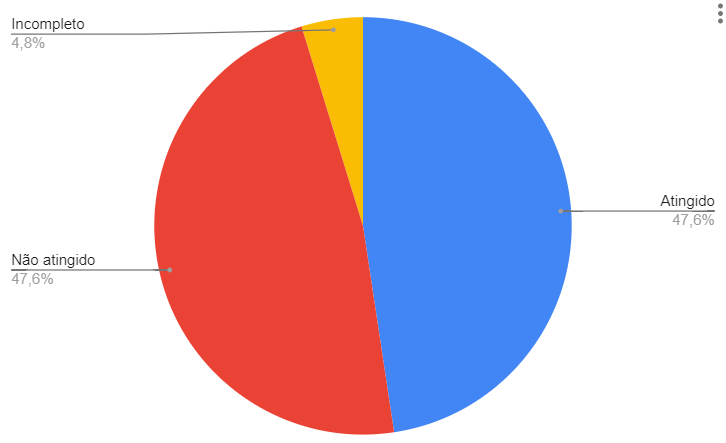
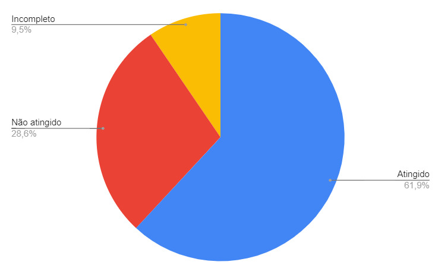

Relato de Resultados da Verificação - PC4
Introdução
O presente artefato contém os resultados da verificação dos artefatos produzidos durante o ponto de controle 4 na versão mencionada abaixo:
- Planejamento da Avaliação do Storyboard versão 1.2
- Planejamento da Avaliação da Análise de tarefas versão 1.0
- Planejamento do relato dos resultados da Avaliação do Storyboard versão 1.0
- Planejamento do relato dos resultados da Avaliação da Análise de tarefas versão 1.0
Metodologia
A verificação foi feita com base nas listas de verificação definidas no planejamento.
Resultados
Verificação - Planejamento da Avaliação do Storyboard
As Tabelas 1 e 2 apresentam os resultados da verificação do artefato Planejamento da Avaliação do Storyboard.
| ID | Questão | Resposta | Comentário |
|---|---|---|---|
| 1 | As legendas estão no padrão do projeto? | Não | Não há legenda referente à tabela do cronograma |
| 2 | Possui links para os outros artefatos? | Sim | |
| 3 | Existe uma introdução no artefato? | Sim | |
| 4 | Existe tabela de versionamento padronizado e completo? | Sim | |
| 5 | Há referências bibliográficas no artefato? | Sim | |
| 6 | As tabelas e imagens possuem legenda, fonte e são introduzidas no texto? | Sim |
Tabela 1: Verificação de padronização do artefato Planejamento da Avaliação do Storyboard (Fonte: autor, 2023).
| ID | Questão | Resposta | Comentário |
|---|---|---|---|
| 1 | O artefato apresenta e utiliza o framework DECIDE para realização do Planejamento da Avaliação do Storyboard ? | Sim | |
| 2 | O artefato apresenta os objetivos da Avaliação do Storyboard ? | Sim | |
| 3 | O artefato apresenta a metodologia que será utilizada na Avaliação do Storyboard ? | Sim | |
| 4 | O artefato apresenta as perguntas e/ou tarefas a serem exploradas durante a Avaliação do Storyboard ? | Sim | |
| 5 | O artefato identifica como ocorrerá o recrutamento dos participantes da Avaliação do Storyboard (perfil e local) ? | Sim | |
| 6 | O artefato identifica quantos usuários participarão da Avaliação do Storyboard e a justificativa dessa quantidade ? | Não | |
| 7 | O artefato possui um cronograma com data e horário para realização do teste piloto da Avaliação do Storyboard ? | Sim | |
| 8 | O artefato possui um cronograma com data e horário para realização da Avaliação do Storyboard ? | Sim | |
| 9 | O artefato identifica o orçamento necessário para a Avaliação do Storyboard ? | Não | |
| 10 | O artefato identifica os recursos de mão-de-obra necessários para conduzir a Avaliação do Storyboard, assim como a preparação e os equipamentos necessários ? | Não | |
| 11 | O artefato apresenta como serão abordadas as questões éticas ? | Sim | |
| 12 | O artefato apresenta o termo de consentimento a ser utilizado na Avaliação do Storyboard ? | Sim | |
| 13 | O artefato apresenta quais dados devem ser coletados e como devem ser interpretados ? | Incompleto | A interpretação dos dados não é mencionada |
Tabela 2: Verificação de conteúdo do artefato Planejamento da Avaliação do Storyboard (Fonte: autor, 2023).
O gráfico a seguir presente na Figura 1 demonstra a quantidade de itens atingidos, não atingidos e incompletos identificados durante a verificação do Planejamento da Avaliação do Storyboard.

Figura 1: Quantidade de itens atingidos, não atingidos e incompletos do artefato Planejamento da Avaliação do Storyboard (Fonte: autor, 2023).
Verificação - Planejamento da Avaliação da Análise de tarefas
As Tabelas 3 e 4 apresentam os resultados da verificação do artefato Planejamento da Avaliação da Análise de tarefas.
| ID | Questão | Resposta | Comentário |
|---|---|---|---|
| 1 | As legendas estão no padrão do projeto? | Sim | |
| 2 | Possui links para os outros artefatos? | Sim | |
| 3 | Existe uma introdução no artefato? | Sim | |
| 4 | Existe tabela de versionamento padronizado e completo? | Sim | |
| 5 | Há referências bibliográficas no artefato? | Sim | |
| 6 | As tabelas e imagens possuem legenda, fonte e são introduzidas no texto? | Incompleto | A tabela 2 não foi mencionada no texto |
Tabela 3: Verificação de padronização do artefato Planejamento da Avaliação da Análise de tarefas (Fonte: autor, 2023).
| ID | Questão | Resposta | Comentário |
|---|---|---|---|
| 1 | O artefato apresenta e utiliza o framework DECIDE para realização do Planejamento da Avaliação da Análise de tarefas ? | Sim | |
| 2 | O artefato apresenta os objetivos da Avaliação da Análise de tarefas ? | Sim | |
| 3 | O artefato apresenta a metodologia que será utilizada na Avaliação da Análise de tarefas ? | Sim | |
| 4 | O artefato apresenta as perguntas e/ou tarefas a serem exploradas durante a Avaliação da Análise de tarefas ? | Sim | |
| 5 | O artefato identifica como ocorrerá o recrutamento dos participantes da Avaliação da Análise de tarefas (perfil e local) ? | Incompleto | Não é específico quanto ao recrutamento |
| 6 | O artefato identifica quantos usuários participarão da Avaliação da Análise de tarefas e a justificativa dessa quantidade ? | Sim | |
| 7 | O artefato possui um cronograma com data e horário para realização do teste piloto da Avaliação da Análise de tarefas | Não | |
| 8 | O artefato possui um cronograma com data e horário para realização da Avaliação da Análise de tarefas | Incompleto | O cronograma não está preenchido |
| 9 | O artefato identifica o orçamento necessário para a Avaliação da Análise de tarefas ? | Sim | |
| 10 | O artefato identifica os recursos os recursos de mão-de-obra necessários para conduzir a Avaliação da Análise de tarefas, assim como a preparação e os equipamentos necessários | Não | |
| 11 | O artefato apresenta como serão abordadas as questões éticas ? | Sim | |
| 12 | O artefato apresenta o termo de consentimento a ser utilizado na Avaliação da Análise de tarefas ? | Sim | |
| 13 | O artefato apresenta quais dados devem ser coletados e como devem ser interpretados ? | Incompleto | A interpretação dos dados não é mencionada |
Tabela 4: Verificação de conteúdo do artefato Planejamento da Avaliação da Análise de tarefas (Fonte: autor, 2023).
O gráfico a seguir presente na Figura 2 demonstra a quantidade de itens atingidos, não atingidos e incompletos identificados durante a verificação do Planejamento da Avaliação da Análise de tarefas.

Figura 2: Quantidade de itens atingidos, não atingidos e incompletos do artefato Planejamento da Avaliação da Análise de tarefas (Fonte: autor, 2023).
Verificação - Planejamento do relato dos resultados da Avaliação do Storyboard
As Tabelas 5 e 6 apresentam os resultados da verificação do artefato Planejamento do relato dos resultados da Avaliação do Storyboard.
| ID | Questão | Resposta | Comentário |
|---|---|---|---|
| 1 | As legendas estão no padrão do projeto? | Sim | Não há necessidade de legendas |
| 2 | Possui links para os outros artefatos? | Sim | |
| 3 | Existe uma introdução no artefato? | Sim | |
| 4 | Existe tabela de versionamento padronizado e completo? | Sim | |
| 5 | Há referências bibliográficas no artefato? | Sim | |
| 6 | As tabelas e imagens possuem legenda, fonte e são introduzidas no texto? | Sim | Não há necessidade de tabelas e imagens |
Tabela 5: Verificação de padronização do artefato Planejamento do relato dos resultados da Avaliação do Storyboard (Fonte: autor, 2023).
| ID | Questão | Resposta | Comentário |
|---|---|---|---|
| 1 | O artefato menciona a apresentação do cronograma realizado das Avaliações do Storyboard ? | Não | |
| 2 | O artefato menciona a apresentação do ambiente onde ocorreram as Avaliações do Storyboard ? | Não | |
| 3 | O artefato menciona a apresentação da quantidade de entrevistados e sua justificativa ? | Não | |
| 4 | O artefato menciona a apresentação dos participantes da Avaliação do Storyboard e como seu perfil está associado ao perfil do usuário ? | Não | |
| 5 | O artefato menciona a apresentação da quantidade de avaliadores e sua justificativa ? | Não | |
| 6 | O artefato menciona a apresentação do perfil dos avaliadores ? | Não | |
| 7 | O artefato menciona a apresentação das questões éticas ? | Não | |
| 8 | O artefato menciona a apresentação do termo de consentimento utilizado na Avaliação do Storyboard ? | Não | |
| 9 | O artefato menciona a apresentação dos objetivos da Avaliação do Storyboard ? | Sim | |
| 10 | O artefato menciona a apresentação da metodologia utilizada na Avaliação do Storyboard ? | Sim | |
| 11 | O artefato menciona a apresentação das perguntas e/ou tarefas exploradas durante a Avaliação do Storyboard ? | Sim | |
| 12 | O artefato menciona a apresentação de um sumário dos dados coletados, incluindo tabelas e gráficos ? | Incompleto | Não especifica como esses dados devem ser registrados |
| 13 | O artefato menciona a apresentação de um relato da interpretação e análise dos dados ? | Não | |
| 14 | O artefato menciona a apresentação de uma listagem dos problemas encontrados ? | Sim | |
| 15 | O artefato menciona a sugestão de reprojeto para o sistema ? |
Tabela 6: Verificação de conteúdo do artefato Planejamento do relato dos resultados da Avaliação do Storyboard (Fonte: autor, 2023).
O gráfico a seguir presente na Figura 3 demonstra a quantidade de itens atingidos, não atingidos e incompletos identificados durante a verificação do Planejamento do relato dos resultados da Avaliação do Storyboard.

Figura 3: Quantidade de itens atingidos, não atingidos e incompletos do artefato Planejamento do relato dos resultados da Avaliação do Storyboard (Fonte: autor, 2023).
Verificação - Planejamento do relato dos resultados da Avaliação da Análise de tarefas
As Tabelas 7 e 8 apresentam os resultados da verificação do artefato Planejamento do relato dos resultados da Avaliação da Análise de tarefas.
| ID | Questão | Resposta | Comentário |
|---|---|---|---|
| 1 | As legendas estão no padrão do projeto? | Sim | |
| 2 | Possui links para os outros artefatos? | Sim | |
| 3 | Existe uma introdução no artefato? | Sim | |
| 4 | Existe tabela de versionamento padronizado e completo? | Sim | |
| 5 | Há referências bibliográficas no artefato? | Sim | |
| 6 | As tabelas e imagens possuem legenda, fonte e são introduzidas no texto? | Sim |
Tabela 7: Verificação de padronização do artefato Planejamento do relato dos resultados da Avaliação da Análise de tarefas (Fonte: autor, 2023).
| ID | Questão | Resposta | Comentário |
|---|---|---|---|
| 1 | O artefato menciona a apresentação do cronograma realizado das Avaliações da Análise de tarefas ? | Sim | |
| 2 | O artefato menciona a apresentação do ambiente onde ocorreram as Avaliações da Análise de tarefas ? | Sim | |
| 3 | O artefato menciona a apresentação da quantidade de entrevistados e sua justificativa ? | Não | |
| 4 | O artefato menciona a apresentação dos participantes da Avaliação da Análise de tarefas e como seu perfil está associado ao perfil do usuário ? | Incompleto | Deve ser adicionado como o perfil do participante se relaciona com o do usuário |
| 5 | O artefato menciona a apresentação da quantidade de avaliadores e sua justificativa ? | Não | |
| 6 | O artefato menciona a apresentação do perfil dos avaliadores ? | Não | |
| 7 | O artefato menciona a apresentação das questões éticas ? | Não | |
| 8 | O artefato menciona a apresentação do termo de consentimento utilizado na Avaliação da Análise de tarefas ? | Não | |
| 9 | O artefato menciona a apresentação dos objetivos da Avaliação da Análise de tarefas ? | Sim | |
| 10 | O artefato menciona a apresentação da metodologia utilizada na Avaliação da Análise de tarefas ? | Sim | |
| 11 | O artefato menciona a apresentação das perguntas e/ou tarefas exploradas durante a Avaliação da Análise de tarefas ? | Não | |
| 12 | O artefato menciona a apresentação de um sumário dos dados coletados, incluindo tabelas e gráficos ? | Incompleto | Não especifica como esses dados devem ser registrados |
| 13 | O artefato menciona a apresentação de um relato da interpretação e análise dos dados ? | Sim | |
| 14 | O artefato menciona a apresentação de uma listagem dos problemas encontrados ? | Sim | |
| 15 | O artefato menciona a sugestão de reprojeto para o sistema ? | Sim |
Tabela 8: Verificação de conteúdo do artefato Planejamento do relato dos resultados da Avaliação da Análise de tarefas (Fonte: autor, 2023).
O gráfico a seguir presente na Figura 4 demonstra a quantidade de itens atingidos, não atingidos e incompletos identificados durante a verificação do Planejamento do relato dos resultados da Avaliação da Análise de tarefas.

Figura 4: Quantidade de itens atingidos, não atingidos e incompletos do artefato Planejamento do relato dos resultados da Avaliação da Análise de tarefas (Fonte: autor, 2023).
Verificação - Cronograma Realizado - PC4
Parte dos autores, revisores e datas presentes no cronograma realizado não estão de acordo com as datas de entrega dos artefatos. É necessário trocar os termos "Data Limite de Entrega" e "Data Limite de Revisão" para "Data de Entrega" e "Data de Revisão", pois se trata de um cronograma realizado.
Planejamento dos ajustes
Com base nos resultados das verificações, foram elencadas as tarefas que devem ser realizadas. Alguns problemas não contemplados pelas listas de checagem foram identificados e incluídos diretamente nas tarefas. A organização dessas tarefas será feita por meio de issues no repositório da disciplina.
Tarefas
Planejamento da Avaliação do Storyboard
- Adicionar tradução das expressões em inglês e siglas utilizadas (aplicação Web, framework, GUI).
- Mudar o nome lichess para Lichess, com maiúscula no início.
- Adição de legendas no cronograma da avaliação e menção da mesma no texto.
- Adicionar o papel do segundo avaliador na seção Papéis dos Avaliadores
- Atualização do termo de consentimento.
- Adicionar a quantidade de usuários que serão entrevistados e a justificativa para a mesma.
- Identificar o orçamento necessário para a realização da Avaliação do Storyboard.
- Identifica os recursos de mão-de-obra necessários para conduzir a Avaliação do Storyboard, assim como a preparação e os equipamentos necessários.
- Adicionar como os dados coletados devem ser interpretados.
| Data Limite de Entrega | Data Limite Revisão | Autor(es) | Revisor(es) |
|---|---|---|---|
| 30/01/2023 | 30/01/2023 | Nicolas Souza | Lucas Gabriel |
Planejamento da Avaliação da Análise de tarefas
- Adicionar tradução das expressões em inglês utilizadas (framework).
- Adicionar capitulo e edição do livro mencionado na tabela de perguntas.
- Preenchimento dos cronogramas de avaliação.
- Atualização do termo de consentimento.
- Adição do Cronograma do teste piloto.
| Data Limite de Entrega | Data Limite Revisão | Autor(es) | Revisor(es) |
|---|---|---|---|
| 30/01/2023 | 30/01/2023 | Lucas Gabriel | Nicolas Souza |
Planejamento do relato dos resultados da Avaliação do Storyboard
- Adicionar que o relato dos resultados deve possuir o cronograma realizado de entrevistas.
- Adicionar que o relato dos resultados deve possuir o ambiente onde a entrevista ocorreu.
- Adicionar que o relato dos resultados deve possuir a quantidade de entrevistados e a razão dessa.
- Adicionar que o relato dos resultados deve possuir como os participantes estão associados ao perfil do usuário.
- Adicionar que o relato dos resultados deve possuir a quantidade de avaliadores e uma justificativa para isso, a função de cada avaliador.
- Adicionar que o relato dos resultados deve possuir o perfil dos avaliadores.
- Adicionar que o relato dos resultados deve possuir as questões éticas consideradas.
- Adicionar que o relato dos resultados deve possuir o termo de consentimento utilizado.
- Especifica onde o sumário dos dados devem ser registrados, por exemplo em uma tabela.
Observação: essa considerações também são válidas para o artefato Planejamento do Relato de Resultados dos artefatos avaliados
| Data Limite de Entrega | Data Limite Revisão | Autor(es) | Revisor(es) |
|---|---|---|---|
| 30/01/2023 | 30/01/2023 | Nicolas Souza | Lucas Gabriel |
Planejamento do relato dos resultados da Avaliação da Análise de tarefas
- Adicionar que o relato dos resultados deve possuir a quantidade de entrevistados e a razão dessa.
- Adicionar que o relato dos resultados deve possuir como os participantes estão associados ao perfil do usuário.
- Adicionar que o relato dos resultados deve possuir a quantidade de avaliadores e uma justificativa para isso, a função de cada avaliador.
- Adicionar que o relato dos resultados deve possuir o perfil dos avaliadores.
- Adicionar que o relato dos resultados deve possuir as questões éticas consideradas.
- Adicionar que o relato dos resultados deve possuir o termo de consentimento utilizado.
- Especifica onde o sumário dos dados devem ser registrados, por exemplo em uma tabela.
- Adicionar que o relato dos resultados deve possuir as perguntas e/ou tarefas exploradas durante a avaliação.
| Data Limite de Entrega | Data Limite Revisão | Autor(es) | Revisor(es) |
|---|---|---|---|
| 30/01/2023 | 30/01/2023 | Mauricio | Nicolas Souza |
Cronograma Realizado [Cronograma Realizado - PC4](../planejamento/cronograma_realizado.md
- Corrigir autores no PC4, incluir Lucas Macedo no Planejamento da avaliação storyboard e retirá-lo da gravação da reunião, pois não estava presente.
- Remover a expressão data limite.
| Data Limite de Entrega | Data Limite Revisão | Autor(es) | Revisor(es) |
|---|---|---|---|
| 30/01/2023 | 30/01/2023 | Lucas Gabriel | Nicolas Souza |
Bibliografia
[1] Plano de Ensino da disciplina Interação Humano Computador.
[2] Gerência e Qualidade de Software - Aula 06 - Técnica de revisão – UNIVESP.
[3] Gerência e Qualidade de Software - Aula 05 - Verificação e Validação – UNIVESP.
[4] BARBOSA, Simone; DINIZ, Bruno. Interação Humano-Computador. Editora Elsevier, Rio de Janeiro, 2010.
[5] GOOGLE Planilhas. [S. l.]. Disponível em: https://www.google.com/intl/pt-BR/sheets/about/. Acesso em: 26 jan. 2023.
Histórico de Versão
| Versão | Data | Descrição | Autor(es) | Revisor(es) |
|---|---|---|---|---|
1.0 |
26/01/2023 | Criação do documento | Lucas Gabriel | Nicolas Souza |